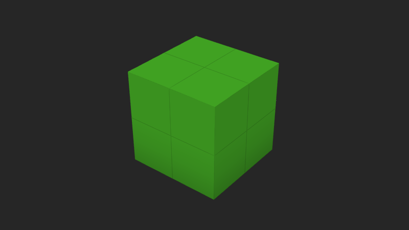
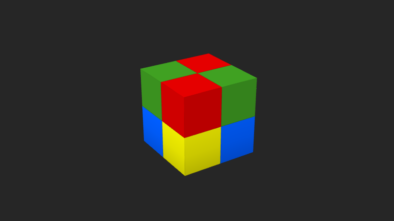
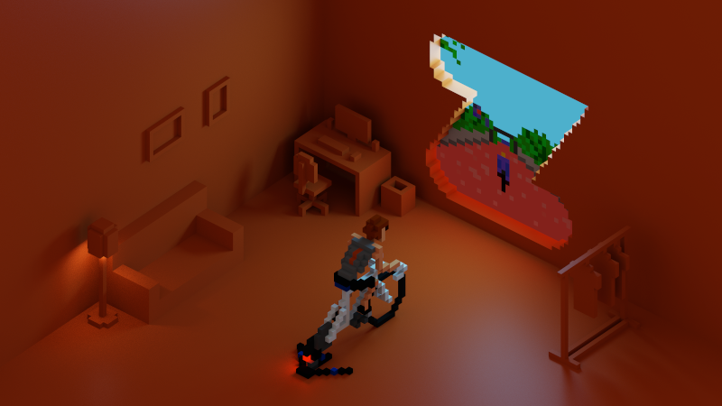

This is an example of what we'll have by the end of this article
TL;DR: The best way to have MagicaVoxel models loaded into a Three.js scene is to export .obj files. Currently, there is currently no reliable library of loading .vox files (the default format used by the program), but exporting .obj files is very easy. Also, don't worry about your voxel palette and materials, as both are also exported by MagicaVoxel.
My goal here is to learn (and share the knowledge of) how to load MagicaVoxel models into a Three.js scene. I want it to be efficient (i.e., I don't want lots of cubes with hidden faces) and I'd like to be able to see all the materials correctly displayed as well.
For some strange reason (at least for my present me), I first decided I should try directly loading .vox files in Three.js. I googled for an existing library to do that because I didn't want to spend time figuring out how to parse models into meshes right now. The only hit I could find was this library, but it's been about an year and a half since it was last updated. Nevertheless, I decided to try it, but it didn't work. The library just threw an exception when I tried the sample code in the readme.
It then occurred to me: why not just export a .obj file? It's a ludicrously well-known file format that's been around for ages. One of the things I was afraid was that MagicaVoxel was going to export several individual cubes; that would be really bad for performance (lots of unnecessary triangles would need to be rendered). Thankfully, you will see that's not the case. MagicaVoxel merges voxels of a same object into a single mesh. My second fear was that I was going to have a hard time trying to load all the materials correctly; also wrong!
My main goals here are:
Let's start with a 2x2x2 cube (.vox model here). This is how it looks in MagicaVoxel:
And this is how it looks after being exported to .obj and rendered in Three.js in wireframe mode:
Rotate it a bit to understand how voxels were merged. Every face of the 2x2x2 cube turned into a pair of triangles, proving MagicaVoxel did a good job exporting voxels into a single, efficient mesh. But how will it look if the model gets more complex?
Now let's make the model a bit more complex by removing one of the voxels of the cube:
Notice that the object still is a single mesh, although now there are more triangles. Notice, however, that the triangle count is as low as possible for this object. Rotate it and try to come up with a better solution (i.e., with less triangles) for the L-shaped faces; if you do, please don't forget to write a paper about it 🙂.
Teaching how to load .obj files is not the focus of this article as there are countless examples on the internet on how to do it. I just picked one and modified it to make it cleaner and easier to read. You can check the source code of this page for the complete example of how to do it, but the core code needed is this:
Three.js comes with a helper library called OBJLoader2 that does just what it says. I just find it a bit weird how important pieces of the Three.js library are found in the "examples" folder (notice the path in the import statement above). It gives me the impression that I can't rely on them, since they are just examples, not guaranteed to be maintained. Anyway, everybody on the internet ended up relying on these helper libraries, so I guess it's safe to use them.
Also notice I'm using the ES6 module version of these libraries. Fortunately, Three.js also provides module versions of everything. That makes things way cleaner because you can know for sure there is nothing leaking to the global scope.
As for the code itself, it's really simple: we just import the loader library, instantiate it and pass it the name of the .obj file to load. Once it is (asynchronously) loaded, we add the loaded mesh into the scene and we're done.
You may have noticed that exporting a .obj file in MagicaVoxel also generates a .mtl and a .png file. The .mtl file contains instructions about the materials used in the model and to which faces they should be applied and the .png is nothing more than the very palette used by you when making your model in MagicaVoxel. It's a 256x1 image where each pixel maps to a color in the palette. The .mtl file references the .png one to obtain the colors used by each material. Here's a sample .png palette image:
Our plan now is to use those two extra files to properly load the materials of our model. For this next test, I am going to modify the original 2x2x2 cube and add different colors to the voxels. This is what we have in MagicaVoxel now:
To apply it to the object in the scene, the code change is simple: we just need to load the material before the object is loaded. Code snippet:
Exporting our new model to .obj and loading it in Three.js, this is what we get:
There's a hidden change now, though. To see it, we need to enter wireframe mode:
Voxels are no longer merged! Due to each voxel having a different color, MagicaVoxel was not able to simplify the mesh. It needed to keep them separated so it could apply a different color to each individual voxel face. One way to fix this would be to bake a texture image for each individual cube face. We'd be trading triangles for texture memory and also making the whole exporting process considerably more complex. I wouldn't go down that path unless really necessary.
So the takeaway here is that if your 3d art has lots of different voxel colors in a same object face, know that it is forcing the creation of extra triangles to accommodate color changes. That means an averagely-sized voxel character can have thousands of triangles. However, since we're talking about 3d models anyway, I wouldn't bother too much about it. 3d models that properly explore the third dimension will naturally have many triangles, as we'll see in the next section.
To wrap up this article, I want to load a more complex object. Here is a MagicaVoxel project I recently did:
Check out this link for a better resolution.
I exported just the cyclist character from it so I could load it in Three.js. Here's the result:
Focus the canvas element above and hit the i key to dump renderer stats in your browser's dev console. In the stats you'll see that it has around 1600 triangles loaded.
And that's it for this exploratory article. Feel free to check the source code here and use it as you please. The cyclist character model, on the other hand, is copyrighted. Please contact me first if you'd like to use it.
One minor thing I noticed is that, despite the 2x2x2 single-colored cube having the minimum number of triangles possible (12), its exported .obj file does not have the minimum number of vertices possible. There is a total of 24 vertices for that model when there could be only 8. MagicaVoxel exported each vertex of the cube three times - one for each face that vertex is part of. Not sure how does that impact performance, but I tend to believe it doesn't matter that much.
One curious thing about .obj files exported by MagicaVoxel is that it always contain a same exact set of normals defined: 6. Since the scene is only made of voxels orientated parallel to the coordinate axes and you can't rotate them in any way, it turns out the 6 normals of the identity cube are the only normals that can ever be used in a MagicaVoxel scene.
This is the first Three.js tutorial I write and one thing I noticed is that having several renderers working on the same page can put considerable stress on the CPU. To prevent the page from unnecessarily using too much CPU, I devised a check to only update the scene if the canvas can be seen by the reader. Here's the relevant logic, which you can see in the source code as well:
Aside from various Stack Overflow questions, I also used this excellent reference on how to load .obj files here.